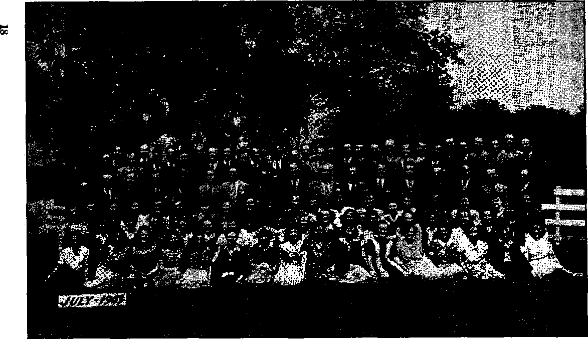
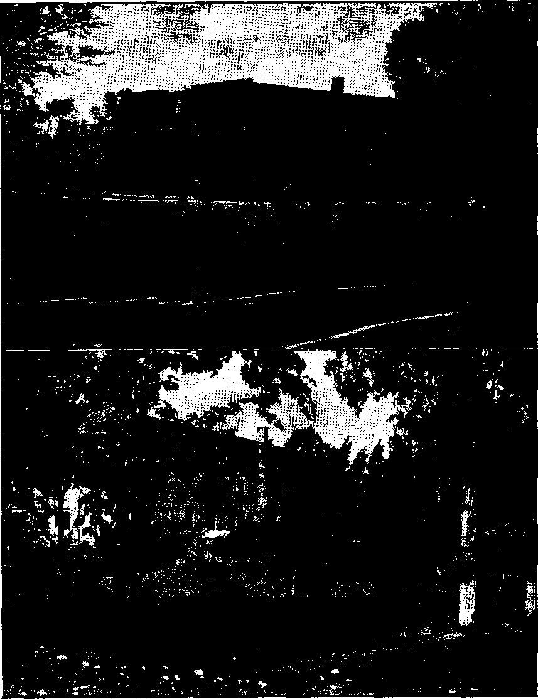

Contents
, Most Bloody and Unscrupulous-
Bishop's Door Opened to Hitler
Carrots and Potatoes Thrown Away ’
"Thy Word Is Truth”
William Tyndale, Bible Translator and Martyr 26
How Henry VIII Became a Protestant Prince 30
Published every other Wednesday by WATCHTOWER BIBLE AND TRACT SOCIETY, INC.
117 Adams St., Brooklyn 1, K. Y., U. S. A.
OFFICERS
President N. H. Knorr
Secretary W. E. Van Amburgh
Editor Clayton J. Woodworth
Five Cents a Copy
(1 a year In the United States
11.25 to Canada and all other countries
NOTICE TO SUBSCRIBERS
Remittances: For your own safety, remit by postal or express money order. When coin or currency is lost in the ordinary mails, there is no redress. Remittances from countries other than those named below may be made to the Brooklyn office, but only by International postal money order.
Receipt of a new or renewal subscript Ion will be acknowledged only when requested. Notice of Exptratton is sent with the journal one month before subscription expires. Please renew promptly to avoid loss of copies. Send change of address direct to us rather than to the post office. Your request should reach us at least two weeks before the date of issue with which It Is to take effect. Send your old as well as the new address. Copies will not be forwarded by the post office to your new address unless extra postage is provided by you.
Published also In Greek, Portuguese, Spanish, and Ukrainian.
OFFICES FOR OTHER COUNTRIES
Argentina Calle Honduras 5646-48, Buenos Aires Australia 2 Homebush Rd., Strathfield. N. S. w. Brazil Rua Licinlo Cardoso 330, Rio de Janeiro Canada 40 Irwin Ave., Toronto 5, Ontario, Canada England 34 Craven Terrace, London, ,W. 2
Mexico Calzada Melchor Ocampo 71, Mexico, U..F, South Africa 623 Boston House, Cape Town
Entered as second-class matter at Brooklyn, N. Y., under the Act of March 3, 1879.
God Is the Great Judge
♦ A touching story came in from Oklahoma. A poor woman, living with- a man who was not her husband, came in contact with the truth. She opened her home to a study of God's Word. She made good progress. After about two months she came to the point where she saw her duty of shutting out her man friend, and did so. He shot and killed her on the spot, and is now in prison awaiting trial. The account says:
I really believe she tried to clear up. Jesus said of those that try to walk in IIis steps that some of them would be killed. I could see that this poor woman, Ida, was craving a conscience right with God, and that that is the reason she now lies dead. She had read five of the most recent booklets. She leaves two little boys, a daughter and a grandchild to mourn her loss.—Kingdom publisher.
The Worst Offender Overlooked
♦ Ignoring religion, which all history shows is the very heart and soul of the Devil’s empire, the London Cavalcade said:
Behind the Nazi gangsters was an evil power which there have beeji as yet no proposals to touch—the banks, the industrialists, and land-owners. These exist in all countries; they are the foundations of a social system which, cannot function without war and which stands condemned before all men of good will by the two world wars it has made within a quarter of a century, by the millions of shattered lives and broken hearts.
Bill of Rights for Spain
♦ In Democratic countries, civil rights have always been won by years of struggle. Franco has once more demonstrated the greater efficiency of dictatorship by handing down to his people a readymade Bill of Bights. It grants them freedom of speech, provided they don’t disparage Fascism, and freedom of religion, provided they are Catholics. All they need now is a Bill of Rights.—The Nation.
“And in His name shall the nations hope.”—Matthew 12:21, A.5.V. ;
Volur'ne XXVI Brooklyn, N. Y., Wednesday, September 26, 1945 Number 679
Has Nazism Been Destroyed?
SO FAR as Jehovah’s witnesses are concerned, Nazism never existed as a power capable of crushing them or the Godly work they are privileged to do. Years before Nazism ascended to power in Germany God’s people had learned that not national or even international governments were the “higher powers” to which Christians must be subject, but that this high title belongs only to Jehovah God and His King Christ Jesus. The leading article in the. previous issue-of Consolation showed the complete failure of Nazism to budge Jehovah’s witnesses from this Scriptural view of matters. All the horrors of the concentration camp could not shake them from alle-j gianee to the true Higher Powers in heaven. Neither was Nazism able to snuff out Hie righteous preaching work in which God’s witnesses were engaged, but the previous report showed it forging ahead. Nazism with its unrighteous decrees was always as a dead thing to Jehovah’s witnesses, so far as its influence upon their integrity and devotion to God was concerned.
The introductory paragraphs of the article in the previous issue showed an evil alliance between Nazism and the Vatican, and stated that the overwhelming weight of facts “convicts them [the Hierarchy] as the real Nazi collaborationists and totalitarianists”. But that line of argument was set aside in that article to allow consideration of the faithful endurance of Jehovah’s witnesses during concentration-camp tortures. In this present article, however, a portion of the great array of evidence con-3EPTEMBER 23, 1945 1 victing the Vatican as Nazi backers and collaborators is presented. As these proofs accumulate the question that is forced into one’s mind is, Since Nazism’s chief backer is still a going, prospering concern, how completely has Nazism been destroyed as a political force? What most Americans want to know is whether the destruction of Germany’s military power means the end of Nazism. Some fear that the underground, the ravages of hunger and disease, the devastation of homes, the chagrin of defeat, the bitterness of mourning, the general unrest, will keep the germ alive, perhaps making it active again. Others are distrustful of the parts played by certain rulers still participating in the politics of Europe: Leopold of Belgium, Victor Emanuel of Italy, Franco of Spain, De Valera of Southern Ireland, and Peron of Argentina. Even the head of a great religious organization still operates in Italy under the agreement he had with the Mussolini government.
A Forbidden Subject
As an interesting light upon the existence of strong Nazi-Fascist forces still dominant in Europe comes the Papal broadcast of June 2. The pope, speaking authoritatively for Catholics, opened up a subject that has been pretty much taboo in the press. Very little information has been permitted to the public concerning the closely guarded contract between the pope and Adolf Hitler. The Catholic population have been largely ignorant of its existence. But now that the pope himself has come forward with
a partial explanation of this agreement (concordat) with the one-time head of Nazi Germany, the subject can be considered even by Catholics themselves with full papal approval. The time is due, even overdue, for careful analysis of the part religion has played in the ■global fire of war; especially since religion remains a dominant factor in continental affairs.
However little the public has been informed, the operations of the pope and hierarchy of the Roman Catholic Church have been forceful and widespread. A new generation of Americans will soon be mature, who have never heard that many high Catholic church officials of the United States, among them Cardinal Mundelein and Cardinal Dougherty, about fifteen years ago publicly acclaimed Mussolini; that Franco, Petain and Laval received high papal honors; that Japan received the pope’s recognition, the first pagan recipient in- history, after Pearl Harbor; that Catholic priests in such distant places as Argen-* tina, the Philippine Islands, Ireland and Mexico preached Nazism until they could no longer do so openly; that the present pope, then nuncio, spent twelve years in Germany prior to 1933, which years roughly coincided with the incubation period of Nazi-Fascism, and himself signed the concordat in 1933, making Catholicism, by Hitler’s agreement, the state church of Germany.
Propagandists think the people have short memories. It is their intention to erase past history, presenting themselves in the modern disguise of benefactors, their incriminating record being covered up. A recent example of this confidence in public forgetfulness is the following statement: “The Spanish foreign ministry issued an official denial today that the government of Generalissimo Francisco Franco had come to power with the aid of the Axis.” (San Diego Union, June 23, 1945) The account continues: “Answering charges to this effect made by a Mexican delegate to the United Nations Conference in San Francisco, the ministry declared in a communique that the statement was both inexact and slanderous.” On the contrary, “the statement” is both exact and truthful, while its denial approaches the high-water mark. of modern propaganda lies. Franco’s record does no1 credit to the pope who knighted him.
Falange Directed by Nazi
As a matter of fact, the Falange, or Spanish Fascist party, was directed by Nazi General Wilhelm von Faupel, both in its organization and in its well-timed rebellion against the duly elected Spanish government in 1936. As late as February, 1944, Jose del Castano was still consul general for the Franco government in the Philippine Islands ; who had declared in repeated speeches: “Our Fascist brothers in Japan are-united with us'in the4eommon struggle. When they strike we must help them.” (Allan Chase’s Falange, page 14) Very tardily in the spring of 1945 the State Department expelled Del Castano on his arrival in San Francisco in May, because he ““repeatedly handed Jap military authorities a complete list of Americans in Manila whenythe enemy conquered the Philippines”. According to the Converted Catholic magazine, the Informaciones, Madrid organ of the Franco regime, commented upon the Pearl Harbor attack in this wise: “Japan has reached the limit of her patience. She could no longer tolerate the interference and the opposition of the United States ... We hope Manila will be saved for Christianity (Catholicism).” (Issue of February, 1944, page 35)
But long before this, Hitler had dispatched his Condor legion to fight with Franco, while Italian planes struck the Loyalist army at the outset of the Franco rebellion. It was only by much religious pressure that America and Britain were-prevented from sending aid to Free Spain’s Loyalists, and thus became spectators at the butchery of the
republic. Piven after this, New York’s Archbishop Spellman, in 1943, attempted to depict Franco as a saint with halo, in a.series of articles published in Colliers. Nevertheless, Americans in general are more apt to remember his title of Franco the Butcher, acquired chiefly by the murder of so many of his Catholic brethren and countrymen.
Spain Was the Funnel
Not only was the Franco government devised in Vatican City and Berlin, and actively" assisted into power, but Franco returned the compliment. Spain became the funnel for American shipments of oil and materiel to Germany; while her shores and isles furnished safe harbor and bases for the Nazi submarine scourge. These, together with hideouts protected by the De Valera Fascist of Eire, who was denounced by Churchill as playing with Nazis and Japs, caused Great Britain to lose two-thirds of her total shipping tonnage during the war. Also, as above noted, her embassies and consulates provided spy" headquarters for the Nazi Internationale. Indeed Franco Spain as the “Neutral” furnished greater strategic asset to the Nazi-Vatican City axis than her military power, debilitated as it was by more than three years of internecine strife.
Franco’s marriage to the Catholic Hierarchy, whose military7 and political arm is disguised under such names as Nazi, Fascist, Falange, and Catholic Action, blooms and honeymoons as of yore. "Recalling that 98 percent of the American Catholic clergy7 backed Franco, while the vast majority of Americans, Catholic laity7 and others, opposed the rebel, according to George Seldes’ Catholic Crisis, no one can read anything but enmity to the democracies in his latest move to replace pro-Allied Lequerica, enemy7 of the Falange party7. Cabinet member Lequerica’s place is to be filled by Arajo, president of the Catholic Action Organization, and accompanies a howl for the return of the.monarchy in the person of
SEPTEMBER 26, 19+5
the late Alfonso XII’s Catholic son, Don Juan. Commenting upon this latest gesture of the Bloody Butcher, an editorial in the Atlanta Constitution (issue of July 21, 1945) fairly expresses the majority7 opinion in the United States:
It is hoped that no one will be taken in by this latest subterfuge of the Nazi stooge who now maintains a despotic rule over Spain. Ue came to power with Axis might. He furnished the notorious “Blue Division” which actively participated in Germany’s attempt at world domination. He allowed the Gestapo to make of Spain a hotbed of espionage. In short, he aided his mentor’s efforts in every possible way. .
. Inevitably, with such a record, Franeo will sooner or later be liquidated. ITis utterly inconsistent play for monarchist support can hardly minimize the contempt in which he is held at home and abroad.
Catholics and the Hierarchy
The editor unquestionably voices the majority7 opinion of freedom-loving people everywhere. Unfortunately the majority opinion, either Catholic or Protestant, does not direct the course of Catholic Action. The Roman Catholic Hierarchy, which is the head of Catholic Action, does not confer with the Catholic population, nor does it concern itself with their opinion, as long as they can be dominated by7 deception and fear. In order to give them free rein to dispose of the lives of subject Catholics just as they wish, clerical responsibilities to the flock are said to concern only the flock’s “spiritual” welfare. Since the Bible proves that no one needs any spiritual ministrations after death, but that every man’s concern is his course of conduct while yet alive, the IIierarohy7’s contempt for Catholic life is sufficient condemnation in itself to cause investigation of other claims. The Catholic clergy7 themselves have thus created a vast gulf between their interests and those of the laity, who are constantly sacrificed without mercy to achieve those ends. Spain, and more recently Italy, furnished prov-
5
ing grounds of papal indifference to Catholic slaughter. By the Hierarchy they are simply counted as sheep for the slaughter, and therefore Jehovah counts the Hierarchy as bloodguilty, stained ' with the blood of the poor innocents.
—Jeremiah 2:34; 25:34.
Unfortunately again, too many accept 4he pope’s claim that he and his organization are exclusively concerned with the spiritual welfare of Catholics, and that the supreme pontiff, Pius XII, is strictly neutral toward belligerents. Proof of neutrality is said to be manifest by the appointment of Catholic chaplains in both Axis and United Nations armies, to encourage valiant fighting on both sides. But, in truth, is this not further proof of official contempt for Catholic life 1 If Catholic must fight Catholic, is the commander-in-chief of all Catholics compelled to spur on the slaughter by providing “spiritual cheer-leaders” for both sides ?
Deadly Danger to Freedom
Contrary to her claims of neutrality, Rome’s religious alliance with Fascism, and her undiminished power, since Hitler’s overthrow, threaten the deadliest danger to America’s war for freedom. It is the more dangerous because the United Nations continue to fraternize with it, even cordially embrace it. The reception of members of General Mark Clarke’s ’army by the pope should be compared with the cynical statement of a Vatican official that American conquest was merely a “changing of the guard”. (Life magazine) Optimists might also remember a former papal declaration of policy that the pope would deal with the Devil hiihself, if expedient.
Religion continues to push itself to the fore as an ally of Fascism. Few, perhaps, remember, so skillful are the methods of the propagandists, that Leopold was approved in his unpopular surrender to Germany by the Belgian cardinal, who represented the pope. This will explain why Catholic Leopold, while repudiated by the Belgians generally, is supported by the Catholic party. “Premier Van Acker charged he had trafficked with Adolf Hitler over the future of his country.” Nevertheless, a bill for referendum on Leopold’s return “introduced by Carton de Wiart, leader of the Catholic party, which is backing Leopold, was passed by a show of hands.” (Atlanta Constitution, July 21, 1945)
Looking back on the years of Nazi conquest, it is noteworthy that the pope has supported every outstanding Fascist, without exception. This statement does not except Hitler himself. Examination of the concordat consummated between ' Pacelli (now Pius XII), von Papen, and Hitler, the conclusion is inescapable that the Papacy had placed its hopes of world domination on the German juggernaut. This document, besides requiring of its clerics that allegiance be sworn to the German government, and that Catholicism become the state church with state support, expressly provided that edch appointed bishop could be inducted into office only after approval by the Hitler government.
Thereafter Catholics continued to fill the key positions in the Nazi Hierarchy; Hitler, the chancellorship, Goebbels, minister of propaganda, Himmler, chief of the Gestapo, later dubbed “Hangman”, and von Papen, "Satan in Top Hat” (title of Tibor Koeves biography), vice-chancellor, and diplomatic betrayer of other countries, honored as Papal chamberlain,—all went to mass and confessional.
The bitter Nazism of pro-Catholic countries burst its bounds when Portugal and Eire sent condolences to Nazi Germany when Hitler was reported dead. It cannot be conceived that Salazar and De Valera would have dared so brazen a move in the face of certain Nazi defeat had not Hitler been Catholic, and representative of the pope’s side of the issue. All unbiased historians agree that Hitler was baptized a Catholic, described himself in the German Who's Who as
“Catholic”, and on July 1,1933, he let it be officially proclaimed: “Reich Chancellor Hitler still belongs to the Catholic Church and has no intention of leaving it.” (Konrad Heiden’s Der Fuehrer, page 632) The same publication states; “One of the most dangerous agents of the Roman priesthood was Hitler himself.”
Moreover Hitler’s aims coincided with those of Catholic intriguers of the past century. This was true, because Hitler’s advisers even besides his cabinet were Catholic: General von Epp and von Schleicher among the military; Fritz Thyssen among the industrialists; Bishop Berning, of Osnabrueck, appointed Prussian state senator, “Father” Bernard Stempfle, “who rewrote and edited-. Hitler’s Mein Kampf, and Abbot Schach-leitner (from whom he was said to receive the sacrament) among the politicoreligious. Such men formulated the double papal aim: first to destroy German Protestantism, which came to political birth with the Treaty of Westphalia of 1648; and to re-establish the Holy Roman Empire. (How the Catholic Church Helped Hitler to Power, by J. J. Murphy, page 7)
As the Nazi legions swept over Europe each victim nation received a Catholic puppet ruler; Petain (the Papal “good marshal”, who sold out France), in France; “Father” Tiso, libertine priest, in Czechoslovakia; Seyss-Inquart, who served both in Holland and Austria; Antonescu in Rumania, which latter received high Papal honors.
It Is Folly to Ignore Danger
Despite these facts, well known in official circles, Americans prefer to think of Hitler as the indiscriminate foe of all religions. Of all large newspapers, only Izvestia, Russian government newspaper, boldly publicizes Vatican support of Nazism, and, characteristically, this brings forth a rebuke from the New York Times, the same Times that editorially denounced the Papacy in 1887. Still
SEPTEMBER 26, 1945
Americans wish to look on the bright side of things. Hitler, the nightmare, is gone. The Japanese have been bombed into unconditional surrender; then soon comes a long and shady avenue of peace, so they hope. Let not the picture be marred by the appearance of any unexterminated branches of Fascism. But however much one wishes to enjoy peaceful dreams, it is folly not to recognize danger, especially that disguised by the propagandists to resemble the champion of the people’s welfare. And, of all countries, it is America that most needs these facts repeated; because here the propagandist has so largely succeeded in smearing over the truth.
Since the Roman Catholic Hierarchy has key men on most large newspapers, on the radio, in the moving-picture industry, the present generation of Americans have heard nothing of the past atrocities committed in the name of religion. They know nothing of the Roman Catholic Inquisition, which kept the horror chambers and torture fires in operation for hundreds of years, and terrorized the world. They have heard nothing of the Rome that fed Christians to the lions in the religious arena, and as an eager-nostriled wolf, hunted down all men of all lands who dared defend the “heresy” of freedom! These pages have been torn from the history books. Today the press is given over to pictures of smiling priests, the heroic exploits of chaplains, the many suave words of the pope; while behind this public front, a facade of ‘irreproachable virtue’, lurks the wolf of Nazism. Look at the gleaming, yellow eyes, the jaws dripping with.blood! See the lips drawn back from the fangs, the dark splotches on the shaggy hide. Catch the stench of fiery breath! It is a killer, crouched in foul-smelling lair. It is horrible but not bad enough to illustrate religion’s crimes. For no wTolves have killed so many, nor so cruelly.
Religion is no stranger to atrocity. The most terrible deeds have had their inspiration in religious intolerance: the
7
massacre of St. Bartholomew’s Day, in which the Catholic French queen snared and murdered thousands of her subjects because they were Protestants (Huguenots) ; the Spanish Inquisition, through the infamous Alba and Torquemada, general and priests, in which Europe was -^ravaged in seeking victims for sword and Tack; the Thirty Years’ War, ended by the Treaty of Westphalia, which Hitler vowed to destroy, which was waged between Catholics and Protestants; while the bitterest fanaticism and cruelty on the battle fronts is manifest by the most religious. Why- then, do Americans persist in thinking Hitler the foe of all religion because of his horror camps, Buchenwald, Belsen, Dachau? The beatings, starvation, lethal gas chambers, and human roasting ovens, had their inspiration in the “hell of torment” concocted by Catholic theologians; and their example, in the tortures practiced by the Inquisition. Religion, to its end, will never be divorced from bloodshed and cruelty.
What “Worse Evils"?
Why, then, reiterate the stupid cry, echoed from Jesuit priests, that Hitler’s crimes proved his enmity to religion? Since Hitler’s name is infamous, and since he also failed to establish the “Holy Roman Empire”, naturally the Catholic clergy would like to disown him, disavow any connection with him. Hence the pope’s “explanation” that the concordat with Hitler was made only to avoid “worse evils”. If the pope refers to Communism as a “worse evil”, then it is proof that he has not relinquished approval of Nazism. This assumes also that, according to the pope, there are “worse evils” than the horror camps, which were so bad that when pictures were recently shown to hardened Nazi generals, several turned pale, one became ill. (“Nazi Leaders Shaken by Horror Films,” Atlanta Constitution, July 23, 1945) A Papal “worse evil” must be more awful than millions impoverished, homeless, starving, and mourning for more millions in the burial trenches. A “worse evil’’ is undoubtedly the Nazi failure, and that the pope will never stop the effort to remedy.
Evidence of the unremitting Catholic backing of Nazism is disclosed by the very form of Catholic Church government. Consideration of the internal structure or organization of the greatest religious empire discloses the familiar form of Nazism. How so? Nazi-Fascism is a dictatorial rule which might be defined as a government of the Tew, by the few, and for the few. In it the common man has no voice. Similarly the Papal or Catholic Church government has a few high officials who formulate all policies, and issue all Instructions. The exalted nature of this executive body is magnified by their designation “hierarchy”, which literally means “sacred rulership”, the term “hierarchs” being applied by the poet Milton to a rank of angels. Modern writers indicate the corresponding likeness to the Hitler regime by using frequently the term “Nazi hierarchy”. Thus the child organization appears to closely resemble its Papal mother organization.
In the latter organization, the best-in-formed writers have remarked a change particular|y since the Lateran Treaty and Concordat of 1929 between the pope and Mussolini. It is generally agreed that this contract, which recognized Vatican City as an independent worldpower, established Catholicism as the, state church of Italy, as well as brought a handsome fortune of lire to the pontiff, marked the beginning of the great modern expansion of Catholic Church power. It was hailed throughout the earth by the forces of Catholic Action as divine favor and recognition of the “mother church”. Michael Williams, a strictly Catholic editor, in his Catholic Church in Action, confirms this (page 13), and the great non-Catholic authorities, Salvemini and La Piana^ in their What to Do with Italy, agree.
Most Bloody and Unscrupulous
That was an important day to the forces that should wreck the world! The . road was open for pushing a long-cherished ambition that had burned in the hearts of Jesuit zealots since their founding by Loyola in 1534. Then and now, says Lehmann: “The unchanging goal of the Catholic Church is the restoration of its status as the only legally, recognized church in Christendom.” (Vatican Policy in the Second World War, page 6) Among Catholic leaders who had few scruples, the Jesuit order surpassed in unscrupulousness; and among nations that trafficked in bloodshed the Jesuits outdid the bloodiest. And in keeping with an unparalleled record of deception and hypocrisy this group had assumed (in 1540) the name “Society of Jesus”. With control of the Catholic Church in the hands of the Jesuits, destruction was on the march!
Let this brief description of Jesuitism suffice to show the character of the organization that had regained the saddle of authority in the vast autocracy claiming 350,000,000 souls. The wheel within the dynamo of Catholic power was whipping up velocity, wilder, no doubt, by reason of former years of setback. Impelled by Jesuit crimes of treachery and murder, France, Spain, Portugal, and other countries, had driven them out even before they were suppressed by the pope himself, in 1773. This was probably the last great triumph of the liberal elements within the Catholic Church. Thereafter the order was restored by Pope Pius VII, in 1821. (It had been established in the United States in 1807, repaying the courtesy later, according to several historians, by plotting Lincoln’s assassination.) Under modern popes the Jesuits have been unhampered in bringing the European pot to a boil. Jesuit-directed Pope Pius XI raised a standard or rallying cry for Nazi-Fascism within the advancing church militant, calling it Catholic Action. Lehmann, above quoted, describes the phenomenon which was erupting within the councils of Catholicism :
Few American observers of the European scene were conscious of the fact that, side by side with the rise of Fascism in the political and social sphere, a like Fascist setup arose within the Catholic Church. This latter setup, the creation of the same Pope Pius XI, was called Catholic Action, which must not be confused with ordinary Catholic activity, but which was a specially created corporate entity integrating all Catholic activity in the hierarchy centered in turn, in the Vatican. People in America did not see it in this light, because their vision was obscured by mere surface events, which were the necessary corollary of all Fascist action, both in politics and religion, namely, a brutal purge of antiFascist members within the Church itself. [Vatican Policy in the Second World War, page 13]
Of course, this was not accomplished without a struggle. Not a few Catholics lost their lives in the fomentation and uproar before all dissenting voices were silenced. The same writer continues:
These facts were erroneously confused in America with what was called “Hitler’s fight against the Churches”. The American public did not see that Hitler, in persecuting and eliminating the anti-Fascist elements of the Roman Catholic Church, was acting parallel with, and aiding and abetting the Jesuitical element within the Church that wished to bring about the same result. [Page 13]
Just how painstakingly the Jesuit model was followed by Hitler is further emphasized by .Lehmann:
There is no doubt that the idea of totali-tarianizing the entire body of a nation by the ruthless intolerance of a controlling organism within the greater organization was taken from the Jesuit setup in the Catholic Church. Hitler specially lauds this intolerant Jesuit setup in the Catholic Church in his Mein Kampf, and instructed his National-Socialist [Nazi] party to make it their model. [Page 15]
Uncompromising Destroyers
The whole Roman Catholic Church was thus moved, actuated and controlled by a small group of uncompromising (intransigent) destroyers, breathing fire and doom to all opponents in the way of world conquest. These facts are set forth with care because it is felt that the in* quiring mind will want to know how it happens that an organization with many .worthy members in its population could $et forth on a course so depraved. It is again repeated, that Fascism, the rule by a few, may carry a whole nation, as in Germany, or a whole empire, as in the Boman Catholic Church, in what gives the appearance of national or imperial madness. Good Germans did npt stop Hitler, nor will good Catholics stop the aggressions of the Boman Catholic Church under Jesuit control.
The Jesuit pattern of clearing out the less rabid among the clergy was followed in Germany in dissolving the liberal Catholic Center Party, just as the Catholic Popular Party in Italy had been dissolved by the pope to make way for Fascism. Some mistook this purge as a persecution of the Boman Catholic Church. Others point out that monks were tried under the Hitler regime for seducing young boys and committing other sex crimes; that Austrian and German priests were tried for smuggling money out of the country; that sopie were tried for harboring “communists”; and that Dr. Klausener, head of the Catholic Center Party, was assassinated in Hitler’s blood purge of June 30,1934. But no one has ever pointed out a single instance where a Catholic has been attacked or persecuted by Hitler simply because he was a Catholic. The Catholic churches which had not been accidentally bombed were still operating when the Allied armies penetrated Germany, and the Nazis called on them to the last moment to bolster morale. Where is any instance of harm done to a Catholic because of his religion ?
By way of comparison consider the outrages done to Jehovah's witnesses in Germany because they served Jehovah. “Then shall they deliver you up unto tribulation, and shall kill you: and ye shall be hated of all the nations for my name’s sake.” (Matthew 24: 9, Am. Stan. Ver.} Treatment of them likewise discloses Hitler’s adoption of Catholic Action.
Signing of the Concordat
In Germany the signing of the Concordat of 1933, establishing Catholicism as the .state church, marked the end of religious toleration of any active opposition. For example, Masonry was driven to the underground; Jewish pogroms or riots encouraged, and liberality of any sort purged, as far as possible, from the Third Beich. This process followed generally what had begun in Italy somewhat previously and resembled the Jesuit pattern of all time. In line with this program Papal procedure demanded specifically the extermination of Jehovah’s witnesses. The Boman Catholic source of this order, long after most of Jehovah’s witnesses were either dead or in prison, is exposed by a declaration by Hitler quoted in The German Way: “I consider them quacks; I do not tolerate that the German Catholics be besmirched in such a manner by this American 'Judge’ Butherford; I dissolve the ‘Earnest Bible Students’ in Germany; their property I dedicate to the people’s welfare; I will have all their literature confiscated.”
■ Manifestly this terrible assault upon law-abiding Christians, who willingly endured all things to hold unblemished their worship of the sinless Nazarene, was, even as the death of their Leader, directly chargeable to Borne’s decree. The words of the Gestapo reiterate the ancient taunt, to wit: “Who is Jehovah?”
This early persecution caused quite a stir among Christians throughout the world. The Golden Age magazine (the name of the publication later changed to Consolation),in its issue of April 25,1934, details the seizing of the Watchtower properties in Magdeburg, valued at more than half a million dollars, in April 1933, and vicious persecution of Jehovah’s witnesses in the fall of 1933, after Hitler’s concordat with the Vatican in July. More than 500 gospel preachers were arrested in the province of Saxony and placed in concentration camps, charged generally with the crime of refusing to “Heil Hitler”. Bible literature was destroyed by the thousands in a manner typical of the Roman Catholic Inquisition. To the beatings and torture of the witnesses was added much reviling and insult to the name of Jehovah. The faithful were called “evildoers”, “parasites of the state,” “traitors,” and mockingly “disciples of Jehovah,” “idiots of Jehovah.” Page 681 recounts a cruel case of persecution in which the Gestapo taunted: “Jehovah has written us a letter that you miserable creatures shall be shooted.”
Bishop’s Door Opened to Hitler
In the same town of Magdeburg, where the Society’s headquarters had been seized, the Catholic bishop was so pleased over events that the bishop’s door of the Cathedral of Saint Maurice and Saint Catherine was opened to Hitler, the first time it had been opened in 410 years—since the days of Luther. (The Golden Age, Vol. 15, page 749) Meanwhile the pope was gleefully celebrating “Holy Year” (1933).
The furnace of Catholic persecution of Christians because they-served Jehovah belched forth. The 1938 Yearbook of Jehovah's witnesses (page 135) revealed that 'almost all of Jehovah’s witnesses are held in prison or concentration • camps. It is impossible to conceive of such wickedness and cruelty as now exists there’.
A little more information began to leak out of the lands of the Inquisition, as shown by the entries in the 1939 Yearbook. In Germany some of Jehovah’s witnesses “were murdered and more than 6,000 are kept in prisons and concentration camps”. (Page 133) Denunciations termed them “Communists” and the Watchtower Society was greatly slandered, “Brother George Franzen was sentenced to two years and a half and a thousand marks’ fine. Later the Gestapo stated: 'The fellow .still believes in his Jehovah.’ ” “Brother Karl Kirsch was murdered by being beaten to death.” . . . “Gestapo agent Theiss at Dortmund . . . publicly boasted that he had beaten up 150 witnesses.” “Other newspapers stated that Jehovah’s witnesses, regardless of the most severe punishments, cannot be kept from serving their God and that they continue to refuse to “Heil Hitler’.” (Pages 149-151) No word came that year from Italy.
Still worse is the news from Germany published in the 1940 Yearbook: “Jeho-' vah’s witnesses to the name of the Most High have suffered in that land probably more than in any other place on earth in modern times ...” Among a long list of atrocities described, this one is typical: “One night the Nazis beat [one witness] thrice into unconsciousness.” (Pages 146-148) This treatment recalled one of the favorite Nazi practices of torture. A victim was beaten or tormented ■ until he mercifully lost consciousness, then revived with cold water and the process repeated. Coronet, June, 1945, relates the similar horrors of the Oswiecim murder camp. Here prisoners were forced to run barefooted on sharp gravel until they fainted; then doused under the pump so that suffering returned. The “Camp of Disappearing Men” (title), where wounds never healed, was complete with its lethal gas chamber, so' popular with the “master race”.
Effect of Papal Alliance
Italy calls forth this comment for the year: “Particularly since the open alliance between the Vatican and Mussolini the totalitarian state of Italy has made it practically impossible for any of Jehovah’s witnesses-to exist.” (Page 156)
Yearbook 1941. In Germany executions increased. Typical of the unrestrained Inquisition is the following: 'We learn that a witness of Jehovah was
ill-treated at various times by receiving 25 times 25 strokes. . . . This terrible treatment caused him to become a physical wreck. He is not'able to hold his body upright.’ (Page 179) In Italy, the sister states, about 150 brethren were arrested and given sentences of many years’ ‘jienal servitude. Nearly aH these were taken to Rome, where the persecutors “mocked at the name of Jehovah, saving, 'Who is God'?’” '
Yearbook 1942. 'In Germany there are more than 6,000 devoted ones who to this day linger behind prison walls and in concentration camps and who refuse to compromise under torture. . . . Nothing can be said at the moment as to the number of those shot or guillotined, but their number may be said to go into many hundreds. . . . Most of the brethren in Italv are still in banishment.’ (Pages 167/170, 171) .
The distressed brother who sent in the report on Germany takes heart from the Scriptural admonition: “Therefore, brethren, we were comforted over you in all our affliction and distress by your faith: for now we live, if ye stand fast in the Eord.”—1 Thessalonians 3 : 7, 8.
The 1943 Yearbook still found a faithful remnant in Germany and Italy who continued under stress to stand for worship of the Most High. Nor had they lost hope; for it is stated: “The brethren in Germany firmly expect a speedy bursting of the fetters.” (Pages 157-158)
The 1944 Yearbook contains the last news of Germany before the great American thrust of liberation; ani) if is touching indeed. Strangely, this information was not received directly from any of Jehovah’s witnesses there, but came through an article published in the Christian Science Monitor, published in Boston, Massachusetts. This journal appears to have been relayed some facts from inside Germany, and says this of Jehovah’s witnesses there: “These simple folk seem most simple in their faith. Recently, seven of them were executed. The executions were marked by the unusual sight of the condemned men’s wives begging them not to sign a renunciation of their faith which might have brought them a pardon.” ”
The account continues with the statement that despite the most vicious persecution the witnesses in Germany are “growing up like mushrooms”. Remarking that Rudolph Hess’ flight to England left the Nazis without their chief persecutor of Jehovah’s witnesses, a paragraph follows having prophetic significance : “A large number of Germans who are not sympathetic with the Bible Students [Bibelforscher, Jehovah’s witnesses] themselves, however, do not approve of Nazi tactics of suppression. They are inclined to defend the members of the group as martyrs for conscience, and to believe that the arrests and executio'ns are a sign of Germany's rapid progress toward the abyss!’ (Pages 130, 13.1. See also The Watchtower, November 15, 4.943, p. 349.)
Made No Bones About It
During these years of Nazi supremacy, the Hierarchy made no hones about supporting Hitler.-For many years Consolation published the facts proving the close alliance, two issues (Nos. 501, 502, 1938) containing the significant article “Jesuitized Germany”. The current newspapers contained pictures of Hitler in St. Hedwig’s Cathedral, doing homage to a papal representative, and one bold photograph shows the Swastika flying over the Cologne Cathedral. The Roman Catholic bishops at their yearly conclave at Fulda reiterated loyalty to Nazi’s fuehrer, the declaration in 1939 published in the New York Times being typical: “In this hour we [Catholic bishops] admonish out Catholic soldiers to do their duty in obedience to the Fuehrer and to be ready to sacrifice their whole individuality.” (Consolation, December 13, 1939) Nor was any change of policy indicated the next year, because, on June 5, 1940, shortly after Democracy’s darkest hour at Dunkerque, Hitler, ordered all
church hells rung in celebration, and the command was freely obeyed. (Consolation of January 22, 1941, quoted news dispatches of the time.)
This review of politico-religious history has been attempted especially for the young people of today, who cannot estimate the present developments without knowledge of what has gone before. Such knowledge the Hierarchy has made difficult to get. Moreover, the seeker for truth is constantly barraged with the epithet: “Hitler was the enemy of.all religions, and fought the Catholic Church as well as Jews and everybody else." Failing to understand a complicated decade, this simple explanation is welcome to most.
But the quality of an argument is never improved by repetition! Repetition of a falsehood, moreover, becomes most dangerous when the truth is withheld. The advertiser relies on repetition ; the propagandist as well. Hence, let the inquirer be on guard, comparing the facts recounted with the future conduct of the H ierarchy, observing particularly their support of Fascist monarchs. Editorial writers are generally loath to examine religious affiliations, even when they are non-Catholic. Consequently the public is left to stumble over all the lies of propaganda tirelessly manufactured by Jesuit-Fascists.
Lulled to Sleep
They are now lulled to sleep by the conviction that Nazism is almost destroyed. The press is full of the releases from Buchenwald, Belsen, and "Dachau, whose dungeons have poured forth emaciated prisoners gauntly inspiring revenge. Gardelen, where a warehouse full of victims were gunned and burned, has been opened to relieve the smell of rotting flesh. Nordhausen, the underground factory where 20,000 workmen died, now cracked by Allied might, holds les miserable# no more. The slaves are having their inning against the keepers, such as sadist Joseph Kramer, head torturer of
SEPTEMBER 26, 1945
Belsen, “'where 60,000 prisoners were mostly ‘worthless Jews’; but, nevertheless, he treated them very well; only about 9,000 died monthly/’ (Life, May 14, 1945)
The public also observes that the German personnel has suffered a smashup. Key figures in the diabolical structure have been dropped: Catholic Goebbels, rat-faced spreader of poison propaganda, said to have suicided; Hangman Himmler, Catholic chief of the Inquisition, now' called the Gestapo, suicided; Reichsniarshal Goering, facing trial; von Greim, his successor, suicided. The military have been taken: von Runstedt, bloody leader of the Ardennes breakthrough; von Friedeburg, now liquidated; Doenitz, director of the submarine scourge; Horthy, Bittmar, and Kyssel-ring, who once guarded Vatican City against Italian patriot assault. The round-up -caught the great Nazi industrialists so necessary to the war machine: Weiss, Krupp'of the famous Essen armaments factory, and Houdrement, who invites a repetition of American folly by his statement, “Krupp needs U. S. loan to rebuild.” (Life, May 14, 1945) The “lesser rats' from Nazi sew’ers”, such as ; gauleiters Forster of Danzig, and Hugo Jury, former “social welfare minister” of the notorious Catholic Seyss-lnquart government of Austria, have fallen into Allied hands; also English traitor William Joyce (Lord Haw Haw), Norway’s Quisling, and Julius Streicher, Jew-baiter. And the mop-up continues.
It is the worst defeat in German history. A recent publication stated that 850,000 of Berlin’s million and a half homes had been destroyed. It was estimated that it would take fifty years to rebuild. Only three large cities remain intact, Leipzig, Weisbaden, and Heidel-burg. Nuremburg and "Munich, smashed into masses of-wreckage, are ghost cities. Cologne, Coblenz, Frankfort, Hamburg, Dusseldorf, and Essen, to mention only a few, fared little better. Germany is a defeated land, her cities crushed, her
13
people stunned, frightened, and servile. (San Diego Union, May 9, 1945; Tribune Sun, June 4, 1945, article by Janies Kil-gallen)
Bas Nazism Fallen?
It is easy to jump to the conclusion that Nazism has fallen with Germany. * Many Americans even go farther and claim that what happened to Hitler was punishment by the Lord because of his attack on religion. But the Scriptures show that Jehovah will make a complete end of wickedness at Armageddon, and no remnants will be left to kindle another fire of devastation: “And I will make justice the line, and righteousness the plummet; and the hail shall sweep away the refuge of lies, and the waters shall overflow the hiding-place. , . . when the overflowing scourge shall pass through, then ye shall be trodden down by, it.” (Isaiah 28:17,18, Am. Stan. Ver.) The Lord’s “scourge” will take only the wicked, wherever they be, and leave untouched the humble ones who seek His protection.
Until Jehovah does fight Armageddon, Nazism will continue to raise its ugly , head. The puppets Mussolini and Hitler have gone,'but their creator, the Jesuit Hierarchy, have trained substitutes with many adherents even in the United States. If at any time Hitler had really fought the “mother church”, a cry from the pope of “Matricide”, such as saved Rome, would have brought swift vengeance. Moving behind a “refuge of lies”, the Hierarchy 'is as swift, direct and deadly ifi action as it is devious and long-winded in words. Excommunication of Hitler (cutting off from all contact from the Catholic church and all relation with Catholics) or interdict against the Nazi government (as was imposed on the Mexican Liberal government in 1929, which denied them all church rights, including burial), would probably have been passed up in favor of the “blood purge”. Assassination has often been the Jesuit weapon of vengeance. Any real insubordination would have brought the fuehrer's end before now.
The whole unreasonableness of any fight between Hitler and the Catholic Church is summed up in the admission of Catholic Kalgergi-Coudenove: “Catholicism is the Fascist form of Christianity. The Catholic Hierarchy rests fully and securely on the leadership principle with an infallible pope in supreme command for a lifetime.” (Quoted from Lehmann’s Vatican Policy in the Second World War, first page of introduction) Therefore be not deceived; the Hierarchy is Nazism’s greatest promoter and exponent. As long as she exists Nazism will be forcefully represented.
THE newPennsylvaniaRailroad steam locomotives, intended to haul 125 loaded cars at speeds in excess of 50 miles an hour, weigh, with their tenders loaded, a grand total of 1,028,000 pounds, and they are really two locomotives in one. Four cylinders are used, of which the front two drive two pairs of driving wheels, and the second two provide the power for three pairs of driving wheels. There is a four-wheel leading truck, and a four-wheel trailer truck incorporating a booster engine to provide extra starting power. The tender has 16 wheels. Roller bearings are used on all axles.
The locomotive and tender is 124 feet 7 inches long over-all and stands 16 feet 5 inches high. The tender will carry 40 tons of coal and 19,000 gallons of water, with provisions for scooping up additional water on the run. The driving wheels are 69 inches in diameter. Steam pressure is 300 pounds to the square inch.
THE University of Califorriia has been broadcasting a series of informative talks over San Francisco radio station KGO, and in one of these it recently mentioned that when Yucatan was invaded by Spanish priests in the days of Cortez, they found natives that believed their ancestors had come from the east; others, from the far north.
It may well be that both traditions are correct. While it is quite well established that the Indians of both North America and South America are, in the main, descendants of Mongolians that followed the Japanese current around the coasts of Alaska, British Columbia and the western coasts of North America and South America, the Mayans of Yucatan are more recent arrivals. There are certain words of the Mayan tongue that are to be found in the language of the Basques, those highly intelligent citizens of the northern coast of Spain. Basque fishermen may have preceded both Leif Ericson and Christopher Columbus and left no records of their exploits. Intermarriage with the Indians would sufficiently account for the swarthy color of the skins of the presentday Mayans of Yucatan.
A CALIFORNIA subscriber writes, "I was at one time an ardent supporter of the two political issues, ‘Ham and Eggs’ and ‘$60.00 at 60 years’, until one day I read the book Salvation and learned that only God through His great Theocratic Kingdom can ever bring the desired blessings to this earth. Now, by the Lord’s grace, I and my family of four are ambassadors for that Kingdom.”
The writer sends two issues of a publication put out by the Payroll Guarantee Association. The first contains a picture of 200 sacks of carrots dumped by the side of the road. The second contains a picture of 20,000 tons of potatoes that were bought by the government at $1.65 per hundred weight. After being spread out to dry they will be sold as stock feed at 30c per hundred. Maybe you cannot figure out how the governnient ean buy potatoes at $1.65 and work them over and sell them at a profit for 30c. But you don’t know the government. They, the politicians, toil not, neither do they spin, yet the farmers, in all their industry, are not arrayed like one of these.
IN RUSSIA a traveler between Moscow and the Crimea once found the ground so covered with locusts for 400 miles that driving over them was like crossing freshly plowed earth.
One mass of locusts crossing the Red sea covered an area of 2,000 square miles; and a single invasion of locusts in Kenya, East1 Africa, did $1,500,000 worth of damage. '
Palestine is often visited. Reports from there are that when the locusts get into a garden everything in. it is completely destroyed. When they enter a vineyard, they leave nothing but bare bark. When they attack a fig tree the trunk is so covered with male crawlers as to make it a bright yellow, but within a day the tree is completely stripped of foliage, the bark is eaten off the topmost branches and the smallest limbs are sawed off completely.
'ThyWORD is Truth"
“John 17:17
Hebrew Prophets and the State '
THE religious clergy of “Christendom” claim that their position in relation to the political state in which they live is the same as that of the Hebrew prophets in relation to the Jewish kingdom of Israel, or is so closely like thereto that it is practically the same. Upon this they base their claim for taking part in the political affairs of the day. Indeed, they do more than this; they insist upon political activity as part of their duty as ministers and representatives of God and Jesus Christ in the earth. They further insist that it is not only , the privilege but the duty of every man who would style himself a “Christian”, and over whose spiritual interests they in any way rule, to do likewise. Politics, say they, is to be considered as “part of the Christian’s religion”.
Rome’s Hierarchy determines the politics of its people; it tells them what they must do in all phases of life. The Greek church would do the same; the Anglican church gives liberty in theory, but does not do so in practice, for the parson would order his parishioners to put themselves under the political direction of the squire. It is in great measure because the Free Churches have had to fight for their life against the greater systems, that they have tried to inculcate the dogma of liberty of conscience among their people. They have, in theory at least, desired that “their peoples” should not be under the control of those great church powers against whose influence and doctrine they themselves have,pro-tested. They have rightly declared that the union of church and state as in England and in Russia in the days of the czars is contrary to God’s Word. But their attitude,- however right it was in its conception in such particular cases, is in practice proved to be unreal; for there have been no more ardent politicians than the preachers and the principal members of their flocks. They have not had the power to direct the affairs of the state; but they have tried to gain their ends by means of the ballot box.
We ask, Is the claim of the clergy a good one? Does the Bible give them any warrant for it? The right answer is that their claim has no sanction in the Scriptures, and that in this matter there is no likeness between the Hebrew prophets and the religious clergy of the present day. Let us say more, namely, that there is no true similarity between the clergy of “Christendom’s” religious organizations and the Hebrew prophets; but a similarity may be seen between them and the false prophets 'who professed to speak to Israel in the name of Jehovah, though they had no commission from Him. The clergy of the religious sects _and cults profess to be called of God and to be separated to Him as the Hebrew prophets were; but their claim is false. They are either self-appointed or are the appointees of a purely human system, and they take their position before men absolutely without divine ordination or authority or privilege.
In order to get the true viewpoint, the special relationship between the people of Israel and their kingdom and Jehovah must be taken into account. The Israelites were God’s chosen people; and the kingdom was God’s own kingdom. The nation of Israel was a chosen people to himself; and Palestine, the land of their inheritance, was God’s own land in this special sense. Although all the earth was His, yet all except this portion which He reserved for himself He had given to the children of men. He preserved Canaan that it might be a place of inheritance for His chosen people for the time being during this wicked world. —Deuteronomy 7:1,6.
The laws of the people given at Mount Sinai through Moses, to enable them to live a communal life in good fellowship with each other and before God, were Jehovah God’s own laws. That law made no provision for a constitution as commonly conceived in “Christendom”, The law and its commandments were sufficient for all needs. No other arrangement would have been necessary if the people had kept the law. Israel’s government was a typical Theocracy, and not an autocracy or a democracy. But when the time came that God, in response to a cry from Israel to be made like their neighbors round about, gave them a king, then the king ■fras His anointed king, His appointee. Hence in the ease of King David, he was specially said to sit upon the throne of the Lord Jehovah. (1 Chronicles 29:23) Thus the land was God’s, the people were His, and the king was His, also. Where do any of the nations today have such position?
Later Israel’s kings^ became as other rulers and many were no longer shepherds of God’s flock. The people lost sight of their special position as before God, and became as one of the Gentile nations. Although proud of their separateness in the facts of past history, Israel outwardly tried to conform to the Gentile ideas. Under such circumstances God raised up His servants the prophets to witness both to the people and to their kings as to their wrong course. As the kings, the chief priests, and the principal men of the people were those who directed the affairs of the nation, very frequently the prophets were sent to speak to them. Thus Isaiah was God’s messenger to the kings of Judah, Uzziah, Amon, and Hezekiah; and thus Elijah was God’s messenger to King Ahfib, and Jeremiah to the kings of Judah in his day. '
The prophets also were messengers to the people, speaking the things that God gave them, in order that they might be -brought to a sense of their responsibility. They were God’s messengers to tell of the wrong conditions which obtained, and to point the people to the requirements of the divine law. The prophets were not politicians in the accepted sense; they were messengers of Jehovah.
“And it came to pass at the end of seven days, that the word of the Lord came unto me, saying, Son of man, I have made thee a watchman unto the house of Israel.”—Ezekiel 3:16,17.
Now it must be said that in no respect have the nations of “Christendom” ever had any such relationship to Jehovah God as Israel enjoyed in the days of old. The fact is patent to all that at no time has there been a kingdom outside of Israel that fias professed to be ruled and governed by the principles of the teaching of Christ. “Christendom” is Christian in name only. Nor has God regulated her affairs or in any way interfered with them or at any time sent any messenger to the courts of “Christendom”. The simple fact is that all the nations of the world have been under the control of Satan the Devil, whom the Scriptures call “the god of this world”. (2 Corinthians 4:4; John 14:-30) The claim of the religious clergy that it is their business to act toward the political powers of this world as'the prophets of old did to’ Israel, and that they should help to regulate the affairs of the kingdom, is false and is positively harmful and a reproach to God’s name in that it has led “Christendom” to believe that this muddle of national policies and prejudicesis in some way God’s kingdom.
Jehovah’s witnesses today know it is no part of their duty to meddle in politics or to start anything that would even appear to be in opposition to worldly governments. Their business is to witness to all mankind that God is inviting the people of good-will to allegiance to His heavenly King; and to the fact that the present worldly setup is not of God but is of man and has been erected chiefly through the misleading teachings of the Babylonish religious clergy who have been unfaithful to the professions.
Left io right: First Row: Homolka, F., Conner, N.. Rowltscb, D., Culley, N_, Hanna. E., Hanson, G., Reddick, E., Dzurak, A. E., Hibshman, H., Stewart, V., Graham, K„ George, S., Huebner, L„ Langford, H,, Hemmaway, D.
G Second Row: Cardillo, C,, Johnson, A., Farah, B.. Valle, L., Bivens, B., Stolfi, M„ Woods, C., Goslin, P., Coffman, E.. Holmes, V.,
O Gensenleiter. J., Brehmer, D,. Garey, A., Hill, E, Boyd, M., Drown, J.. Hannan, V., Goslin. V., Laing. M.
Z Third Row; Walker, E.. Daniels, E., Montier, W., Miller, H., Mazur, W„ Hollister, J., Mickler, H., Pltotti, L. E., Allison, G.. Miller, R,,
□ Rydell, E., Geiseirnan, M., Marquardt, L,, Johnson, E., Miller, A., Steele, L. G., Barney, E„ Hollister, V., Laier, H.
F Fourth Row: Mays, W., Woods, L„ Briggs. R., Wan, W,, Mulialuk. P.. Bartlett, M., Himelick, R„ Lettler, A., Walker, W, E., Hollister, G.,
> Knott, W„ Fedorka, j„ Wigcr. S„ Leiby, M., Hanna, W„ Culley, E., Anderegg, G,
— Fifth Row: Kirk, R., Adams, J„ Anderson, C„ Hibshman, D., Conte, J., Goodwin, L., Chaplinski, W., Hemmaway, J,, Maddox, T.,
O Mickler, L , Huebner, H., Hannan, R., Claus, O., MeRoy, H., Garey, M., Barney, C,, Johnson, V., LaBlotier, K„ Turpin, J,, Laing, L,, Z Daniels, E., Weber, H., Stolfi, J„ Monroe, D., Farah, A„ Bivens, W,. Homolka, C., Baxter, D., Slderts. A., Vaile, C., Fish, L.
PARADISE in the New World will be like the garden of Eden in its perfection. Yet creatures in their imperfection find it hard to picture in their minds such a condition. Those, however, who were fortunate enough to be at the Watchtower Bible College of Gilead on graduation day, July 30,1945, have some idea of what the New World of Righteousness will be like; for truly it was as if they were given a preview of such coming Edenic condition.
The campus grounds were most beautiful. About the main auditorium was spread a spacious carpet of luxuriant green grass fringed with gorgeous flowers of the most brilliant hues, colors that only the Creator can mix. The background foliage, in contrast, was a restful dark-green. A delightful and refreshing breeze rustling in the trees harmonized with the melody of many twittering birds; while overhead in the clear blue sky the golden ball of fire radiated its smile of approval on the proceedings of the day. Gilead amidst this setting was nestled between two miniature lakes that reflected this resplendent glory like mirrors and framed it off from the rest of the world.
No announcements or invitations were sent out for this occasion, so only about 150 visitors were expected. But early in the morning of that day a steady stream of cars began to flow in from the north and south on highway number 34. To the amazement of all they kept coming until there was a total attendance of, not 300, as expected, but 1,380! Only 800 of these were able to squeeze themselves into the auditorium; the rest being content to sit outside either on benches or on the grass . and listen to the proceedings over a loud-‘ speaker.
At nine o'clock promptly the1 program began with the singing of a ‘ song of praise to Jehovah and the offering up of a prayer. The president of the College, Mr. N. H. Knorr, acting as chairman, then introduced the several members of the faculty and also the Farm servant.
A Headache, Then a Heartache
As thesennstructors each spoke a few minutes the hearts of the student body, as well as their eyes, were filled with emotion and tender feeling. One instructor said that though they had been a headache io him, now they were just a heartache. He then reminded them that they had. come to Gilead equipped for Theocratic warfare, ministers qualified to wield the sword of truth, but seeking further training. Now they were leaving Gilead with tljose swords polished and sharpened to razor keenness and with the knowledge of how to use them most effectively. The second speaker, the instructor in Spanish, gave his message in Spanish and told the students he loved them because they loved Jehovah and were willing to go to the ends of the earth with the message of comfort for those whose right it was to hear. The third said'he felt as though autumn had come prematurely, a mixed feeling of joy and sadness. Joy because of knowing that an abundant season was past, with the mature fruit of the field • garnered in; and sadness because of the barren season and emptiness ahead caused by departing students. The fourth instructor likened the world to a great courtroom where Jehovah sits as Judge. The witnesses of Satan have failed to substantiate his side of the issue of universal domination. On the other hand, Jehovah puts His witnesses in the field to testify concerning the almighty majesty of the Most High God. And. these graduating students, being specially trained servants, have a singular responsibility in upholding this universal sovereignty of Jehovah. The Farm servant then expressed his appreciation for the co-operation the students had given him, as part of their training, in caring for the many domestic duties.
The-president’s secretary then read a number of telegrams and letters received from former graduates who, being at the time in far-off lands, were separated only by distance, not in mind and spirit. These included messages from Alaska, Canada, Chile, Costa Rica, Cuba, Mexi-n co, Nicaragua, El Salvador, and Uru-j guay, besides many places in the United States.
From frigid Alaska came wgrm greetings kindled by a burning zeal for The Theocracy: “The thoughts of our hearts and minds have often been of Gilead and the students now graduating, and, too, of the most blessed privilege of being sent forth whithersoever the Lord directs. The glorious treasure of service becomes more precious as new fields are opened up and new opportunities to witness to Jehovah’s kingdom are afforded us. We exceedingly rejoice with you, and may Jehovah’s rich blessings and active force rest upon each one of you as you go forth to your new assignments.”
"Come Over into Macedonia”
The cry from south of the border is louder than ever: ’"Come over into Macedonia, and help us.” (Acts 16:9) A radiogram from Nicaragua read: “Congratulations on termination of prepara- < tion. Millions good-will Latins await help. May holy spirit guide your future work.” From Uruguay: “Gileadites in Montevideo wish you Jehovah’s blessing and increased privileges. Territory here excellent. Sheep innumerable.” And from Chile: “We look forward with keen in-tcrest and anticipation to the time when the Lord will send more laborers to this land. From all sides we hear the groans
This is only a portion of the 500 happy faces that waited for the doors of the auditorium to open on the morning of graduation day.
Interested spectators rin^ the natural pool on the college campus to witness the immersion of 16 newly interested persons living in the vicinity. This symbolizing of consecration occurred the day before graduation.
of people who, longing under the yoke of religion, are reaching out for a life line. The truth is what they need, and the Lord has provided the opportunity for them to receive it.”
After the reading of these delightful greetings, a member of the board of directors of the Watch Tower Society then gave an address that tied in very nicely with this call for more publishers from foreign fields. He expressed the keen interest the Society’s office in Brooklyn has in the work and service of these fulltime ministers who arc sent forth from Gilead, and assured them that as they were sprinkled over the face of the earth their problems and interests would still be those of the Society, which stands ever ready to aid and counsel them according to their needs.
“Defense Through Knowledge"
Of course, the anticipated feature of the day’s program was the stirring and timely talk by the president, “Defense Through Knowledge.” In simple, yet forceful, language he showed that Jehovah alone is able to supply the only practical defense for the crucial days ahead. Knowledge he delined as “information received from a truthful source”. He then continued to show7 that man cannot begin to get knowledge if he does not fear Jehovah God: 'To such as fear Him He teaches knowledge by His revealed Word, the Bible. Hence it is necessary to dig deeply into it and search for the precious truths and vital information and instruction therein contained. Such truthful information is our indispensable defense; for without proper instruc-
tion man’s feet are hasty to run in the way of sin. All people, regardless of race, nationality, color, or religion, have the right to come to a knowledge of the truth. In their ignorance they are totally without a defense against the impending storm of Armageddon; and therefore we will be diligent to point out to them the Sway of escape, which is a knowledge of 'Jehovah and His kingdom under Christ Jesus. Money may be a temporary defense now, but, at the best, it is only transitory. At Armageddon scoffers will cast their gold and silver into the streets as worthless. Knowledge, therefore, not only is for our own defense, but is given that we may impart it to others. This being so, what a precious privilege it is to be bearers of the knowledge of the Lord to others! It is a priceless and rare honor, not to be compared even with the fabulous wealth of glittering gold, purified silver, or spariding jewels. We will therefore prove ourselves the true servants of God and ambassadors of His triumphal King by making known everywhere the knowledge of Him and His glorious Theocratic Government.’
To illustrate his talk the president related many heart-rending experiences that Jehovah’s witnesses have suffered in the German concentration camps for over ten long years. But the Lord protected and cared for those witnesses. ‘Knowledge of Jehovah’s purpose has been their only defense; and how precious is that knowledge! It has kept those brethren faithful. We, too, must maintain our integrity; those brethren did; we also can if we have knowledge.’
The Diplomas Distributed
Next on the program was the giving out of diplomas. Of the 101 students graduated in this fifth class, 94' were called, one by one, to the platform to receive, amidst spontaneous applause, a certificate of merit.
The overwhelming joy and gratitude of those students found some expression in a resolution that they then offered.
It expressed their thanks and appreciation to Jehovah, the Universal Sovereign, and His enthroned and reigning King, Christ' Jesus, for raising up a “faithful. and wise servant” (The Society) in these “last days”; also for the Unspeakable privilege that had been theirs of going through the portals of Gilead to join that band of faithful witnesses who are filtering out into foreign lands enlightening those that sit in darkness, all to the honor, praise and vindication of the great and eternal name of Jehovah.
Following the quick and unanimous adoption of this Resolution the assembly, numbering nearly 1,400, rose and with no little feeling gave thanks to Jehovah in prayer for all His manifold blessings bestowed upon them all. .
End of a Blessed Day
Coming as a fitting end pf a blessed day, was a meeting in the evening in the Gilead auditorium. Friends, relatives and students numbering 527 stayed to enjoy a happy session in which the graduated students themselves expressed their individual appreciation. Their experiences were seasoned with many humorous incidents. In conclusion, the beloved president of the College spoke informally, assuring them of his love and bidding them prosperity in their future work of ‘discipling all nations’.
This graduation day, one of the brightest spots in the lives of all present, had come to an end. It was time to say good-bye. But this was hard to do. As one of the students expressed it: “Here is where I have been taught by the great Teachers, Jehovah God and Christ Jesus. Here I have been sheltered, fed, and loved by my associates. How can I leave this place now? Oh, I’d love to stay here land just go op studying forever. No, I don’t really want to stay here;.for it is a very selfish thought. The only way I can express my appreciation to Jehovah for this wonderful privilege of attending
Top : Gilead viewed from the north, showing improvements made in the water course.
Bottom: To the south of Gilead this quiet little lake surrounded with trees and foliage reflects the Edenie beauty of the college campus.
Gilead is to go forth with a greater zeal than ever before, to the ends of the earth if it be His will, and tell the truth to the many hungry ones who have never heard of the glorious Kingdom.”
Yes, Gilead had bound a tie closer than any other because, as a group, they had '» felt Jehovah’s spirit working upon their minds as they studied, as well as upon the instructors as they endeavored to assist them gain that ‘knowledge for de-
< ■
fense’. Here these students had learned to love each other very dearly, as brothers and sisters in one big family under the Great Father, Jehovah. So, as they tore themselves apart in body and said farewell, nevertheless the bond of friendship and affection between these classmates still held fast. And it will not be broken; no, not even by distance though they be scattered to the four corners of the earth. .
Religion in Texas
TN THE big state of Texas, with its JL 6,414,824 population, many of the 256 sects doing business in the United States are represented. The way the politicians view the religious industry is that if they holler at every opportunity, “Give us more religion,” they will be bound to get at least a few more votes, so that they can continue to feed at the public trough.
Now it happens that young folks, if they are students, are likely to be honest ; and so when a girl at the University of Texas got to thinking about how the Russian peasants had been fooled into worshiping cotton saints and mechanized “blood-flowing” saviors, she rightly listed religion as a sin, as it is listed in the Bible itself, at Exodus 34:12-17 :
Take heed to thyself, lest thou make a covenant with the inhabitants of the land whither thou goest, lest it be for a snare in the midst of thee: but ye shall destroy their altars, break their images, and cut down their groves: for thou shalt worship no other god: for the Lord [Jehovah], whose name is Jealous, is a jealous God: lest thou make a covenant with the inhabitants of the land, and they go a whoring after their gods, and do sacrifice unto their gods, and one call thee, and thou eat of his sacrifice; and thou take of their daughters unto thy sons, and their daughters go a whoring after their gods, and make thy sons go a whoring after their gods. Thou shalt make thee no molten gods.
Take a look also at Deuteronomy 7:16, which reads:
And thou shalt consume all the people which the Lord [Jehovah] thy God shall-deliver thee; thine eye shall have no pity upon them: neither shalt thou serve their gods; for that will be a snare unto thee.
What use has Almighty God for Buddhism, or Shinto, or Mohammedanism, or demonism, or “eternal torture”, or “purgatory” fire-escape religion? None in the least. The girl was absolutely and everlastingly right. But how the newspapers and the politicians and the preachers did jump on her! What she said was:
Religion the Russians want none of. Their accusation against it sjems to be justified when they say that religion in the past has been merely an instrument of force and superstition used by the state on one hand and the church on the other to hoodwink and intimidate the common citizen.
What’s Wrong About It?
What’s wrong about that paragraph? Not one thing. Everybody with an ounce of brains knows it is the truth. But it was too good a chance for the politicians to miss; so they condemned it in the House of Representatives by a vote of 97 to 25, The 97 went home at night, saying to themselves, “Well, that ought to net me a few religious votes, in this highly religious state.” Religion, it should be explained, is human or Satanic tradition, and is the exact opposite of Christianity, which is wholly based on God’s Word, the Bible. The girl listed it along with drunkenness, prostitution, poverty, begging, insecurity and race differences, as humanity’s seven besetting sins.
Samples of Religious Bungling '
The politicians said that for a girl to use her brains like that was a “disgrace and embarrassment to the university and citizens of Texas”.' That enabled them to get into the paper, and maybe collar a few votes. The preachers and the newspapers followed with their old battle-cry the “Need for Religion”, all to their own disgrace and to the confusing of the minds of the honest people of Texas. What Texas and every other state needs is not more religion (look at religious Japan; and religious Franco and Salazar), but no religion, and more Christianity, more truth, more boys and girls that will stand up for honesty and against' hypocrisy. The girl was right and the preachers and papers were wrong, as they usually are. They dread the truth on this subject, and fear the Roman Catholic Hierarchy and its cowardly but effective boycott.
Texas and other publicity seekers could bawd out this honest girl, but they don’t have much to say about the fact that, as Newsweek recently put it,
Cases of leprosy have been recorded in 38 states, and the disease is endemic in Texas, Louisiana, and Florida; there may be between 1,000 and 1,500 cases in the country. There are selfish interests that do not wish the truth publicized. To admit that there are cases of leprosy in most of our large cities would interfere with the commercial prosperity of some of our citizens.
At Dallas, at the 47th annual convention of the Dallas Episcopal diocese, Episcopal bishop Harry T. Moore' expressed a general religious view when he said regarding Japan:
I hope her cities will be made into masses of ruins, and the massacre of Pearl Harbor avenged on a ten-for-one basis.
The Scriptures speak about ‘an eye for an eye’, and ‘a man’s life for a man’s life’ but they don’t seem to say anything about ten lives for one man’s life, nor about torturing persons forever be-caused without their knowledge or consent, they were born in sin and shapen in iniquity. Now, if the bishop had just said that he hoped that all three of Japan’s religious shrines were to be turned into holes in the ground, he wouldn’t have hit it so bad at all.
Something Pretty Good
Texas has a good many thinking men and women. Here is something by Jeff D. Ray in the Fort Worth Star-Telegram that is worth reading. It isn’t religious. Read it and see.
All my life I have heard it said that New Testament churches are ideal democracies. I never took much stock in it but I have even heard our spellbinding orators say that Thomas Jefferson got his idea of democracy from a little church hard by Monticello.
As a simple matter of fact, are New Testament ehurches democracies? Before we try to answer the question let us seek a definition of a democracy. How would this do? A democracy is an organization of people acknowledging no overlord, whose sole authority rests in and emanates from the people, whose constitution and laws are framed and promulgated by the people and whose government is administered in behalf of the people. (“Of the people, by the people, for the people.”)
Now, if that is a democracy, New Testament churches fail to stand the test in at least five points.
__ Let us look and see:
1. A democracy makes its own constitution and writes its own laws. A New Testament church does neither.
2. A democracy can promulgate its own Bill of Rights. A New Testament church can not.
3. A democracy has no overlord assuming authority over it and whose will it is required to obey. A New Testament church has.
4. A democracy can amend or repeal its constitution and its law. A New Testament church can not.
5. A democracy can create a central governing power controlling its minor provinces and dependencies. A New Testament church can not. In fact it can not have either provinces or dependencies.
John Adams, our second president, said: ./‘Remember, a democracy does not last long. <t soon wastes, exhausts and murders itself. There never was a democracy that did not commit suicide.” The only thing that will keep a New Testament church from the tragic end Adams suggests is that it is a theocracy and not a democracy. Loose thinking has led many people to think and teach that in the patriarchal days God’s people were governed by a theocracy but now they are governed by a democracy. The simple truth is God’s people are governed today by a theocracy as literally as they were in the days of Abraham. ' It is a common saying among us that a New Testament church is independent, has no overlord, and can do what it pleases, none of which is true. A New Testament ehureh is less independent and more subject to the imperious rule of an overlord than any other organization on earth.
The New Testament church does not make its own laws. These are made and handed down from Supreme Authority with an imperious demand for obedience to them and with assurance of penalties for disobedience of them. I grow tired hearing men talk about “Christianity and democracy” as if they were one. Christianity is not a democracy, and democracy is not Christianity. Christianity is a ; theocracy receiving its laws direct from God and responsible to Him alone for the observance of them. It may be true, though not necessarily true, and in many cases not true at all, that a democracy is the best form of human government. But a church simmers down to the level of a purely political organization when it forgets that its laws come from God and that it must answer to Him alone for the way in which these laws are observed. I hear a good deal of talk to the effect that a church is an independent, self-governing body and can do anything it pleases. As well say that John Doe is an independent American citizen and can do anything he pleases. He can, but if he pleases to do some things he will land in the penitentiary or the electric chair.
One of the things that ails our churches today is that so many of them have been deluded into the idea that they are independent, self-governing democracies and are therefore ignoring the voice of Him who said “I—your Lord and Master.”
THE fifteenth century, toward the close of which William Tyndale (tin'dal) was born (circa 1480), was a century of determined opposition to the circulation of the Bible in English. An English translation had been made by Wycliffe and his colaborers at the conclusion of the previous century. It was revised by Purvey and was surreptitiously circulated, in manuscript form, copied and recopied, and secretly studied for fear of the clergy, who were determined to let none but “authorized” persons read it. ~
During the fifteenth century, and more particularly the latter part of it, the Bible was circulated (and printed) in the
language of the people in Prance, Spain, Italy, Bohemia and the Netherlands, but there was no part of the English Bible put into print before 1525, while the Bible as a whole was not issued in print in the English language until 1535.
Tyndale was born in Gloucestershire. \ He was educated at Oxford University and also went to Cambridge. Like many another honest man, Tyndale obtained priest’s orders, in 1502, and entered-the monastery at Greenwich as a friar six years later. He didn’t know the fraternity as well as he came to know them later. His disputations with the Romish ecclesiastics and his free expression of opinion got him into some trouble with
the ignorant local clergy; and he was examined before the religions authorities, but no penalty* was imposed. There was much sentiment among the people in favor of reforming the church, and apparently the dignitaries thought it best to go easy, at least as far as the well-informed Tyndale was concerned. Tyndale concluded, nevertheless, to go elsewhere, and departed for London, his mind set on translating the Bible into English. He wanted every farmer’s son in England to know the Scriptures better than the clergy knew them. He found, however, that there was no room in London, or, for that matter, in all England, to translate the Bible.
He at length left London for Hamburg, and met Luther. He went on to Cologne and began to print his first edition of the “New Testament”, but after some ten sheets had been printed somebody religious got wind of it, and the translator and his helper betook themselves to the city of Worms, where they could work with more safety, and it was here that the New Testament in convenient form was completed, to be followed by another edition, still more compact, in 1525. The prologue to the first edition contained some helpful advice for those who wished to study the Scriptures with profit. This prologue has been published separately under the title “A Pathway to the Scriptures”.
Copies of Tyndale’s translation soon found their way into England, and people began to read them with great interest. Already in the following year, 1526, Tunstall, bishop of London, issued orders prohibiting the circulation of this version of the Word of God, and two years later a number of copies were collected and burned at St. Paul’s Cross. The clergy were furious and the English ports were watched to see that Tyndale’s cheap but excellent translation did not get into the country; but the Bibles ■ got in nevertheless, smuggled through in various ways. Vessels laden with grain were likewise carrying the bread of life to England, and other commodities also had the Bible tucked away in safety among them. ■
A Splendid Translation
Tyndale had made his translation straight from the original Greek and Hebrew, and not from the Latin Vulgate or some other translation. The translation is described as a truly noble work, faithful and scholarly, yet set forth in simple and popular language. Much of it was later embodied in the well-known King James Version, and so has come down to our day. Tyndale’s rendering of the Lord’s model prayer will be of interest. It follows:
0 oure father which art in heven, halewed be thy name. Let thy kingdom come. Thy wyll be fulfilled, as well in erth, as hit ys in heven. Geve vs this daye oure dayly breade. And forgeve vs oure treaspases, even as we forge ve them why eh treaspas vs. Lede vs nott into temptacion, but delyvre vs from yvell. Amen.—Matthew vi: 9-13.
Not only did Tyndale woyk on the translation of the Scripture; he also issued booklets in explanation of Bible truths. One of these was entitled “How Christian Rulers Ought to Govern”. His writings did not please King Henry VIII, him of the many wives, and whom Catholics credit with the reformation in England. Henry, however, merely used the Reformation for his own ends, and Tyndale’s criticism of both Henry and his truculent ecclesiastical backers showed that the Reformation in England went forward not because of, but in spite of Henry,
Indeed, so incensed were Henry and his clergy at Tyndale and his translation that they wefe fully determined to commit both to the flames. So vigilant were they that of Tyndale’s first edition of the New Testament only a single fragment now remains. Of the second, smaller edition only one perfect copy, with title page missing, is to be found (in the Baptist College at Bristol) and an imperfect copy in the library of St. Paul’s
cathedral. Efforts were made to appre-' head Tyndale and get him back into England. Others endeavored to decoy him back, but he was wary of these efforts and kept himself well beyond the reach of the sly clergy. Even after Henry “turned Protestant” Tyndale was not ^nxious to return. He knew the clergy too well. After he rejected the “invitation” to return, Henry demanded his surrender from the emperor as one who was spreading sedition in England. Tyndale, who was in Antwerp at the time, left that city for a safer place, but returned after two years and busied himself with revising his translations, which now also included the Pentateuch, or the five books of Moses, and a translation of Jonah.
Tyndale's Martyrdom
Meanwhile the clergy were busy, too, not in feeding the flock, but in seeking to destroy one who was feeding them. They had an English Roman Catholic, called Phillips, pretend to be interested in Tyndale and his reasonable expositions of Scripture. Tyndale showed Phillips every kindness, and Phillips, like a true child of the Devil, reciprocated by betraying him into the hands of his enemies, Tyndale was taken to the state prison at Vilvoorden, near Brussels, and, while- Cromwell and others made efforts to save him, he was speedily tried for “heresy” (every Protestant is a “heretic”). He was condemned and “degraded from holy orders”, as Huss had been before him. The university of Louvain, which had thirsted for his blood, now had him in its power. He was condemned and, Friday, October 6,1536, fastened to the stake, while he cried out in earnest prayer, “Lord, open the eyes of the king of England.” He was then strangled and his body reduced to ashes. His enemies had succeeded in destroying the body, but were unable to destroy the soul’s future life.
Tyndale had not suffered or travailed in vain. Now, for the first time, a small folio reprint of- his revised edition of 1534 was brought out in England. A perfect copy of this edition is preserved in the Bodleyan library. Though exiled from his own country, Tyndale (and not Henry VIII) played a leading part in the English reformation. His writings in defense of truth, righteousness and the Word of God show sound scholarship and literary ability, and shaped in great measure the thought of honest seekers for truth in that day.
The work of translation which Tyndale had begun was continued. It is believed that he himself finished in prison the section of the Hebrew Scriptures from Joshua to Chronicles. Soon a translation appeared which was called Matthew’s Bible. It was said to be “truely and purely translated into English by Thomas Matthew”. This name, however, is believed to have been a nom de plume for John Rogers, a friend and fellow worker of Tyndale, and the translation was not really a new one at all, but largely a compilation from the renderings of Tyndale together with those of Coverdale, who also labored at that time in issuing a translation of the Bible. Matthew’s Bible, like Coverdale’s shortly before it, was issued “with the kinges most gracious lyeence”. .
Coverdale is believed to have been with Tyndale at Hamburg in 1529, and his translation was issued out of the Latin and German. It was the first complete Bible printed in England, in 1535. The 400th anniversary of this event was commemorated just ten years ago, ■ and resulted in envious attacks upon the .Bible by Roman Catholic writers. (See Consolation No. 664. j i
Numerous other editions of the Bible followed, including the Great Bible, 1539, an entirely new revision hacked by the bishops! A second edition of this Bible was called Cranmer’s Bible, because it had a long preface by Cranmer. It was of large size, and “appointed to . be read in churches”. Tyndale’s version was prohibited by an act of Parliament in 1543, and it was further enacted that all notes and marginal comments in other editions of the Bible must be eliminated, and that ordinary people must not under any circumstances read the Bible. I’he leopard could not change his spots, though he was now “Protestant” as far as England was concerned. Coverdale’s Bible was included in the proscription in 1546, and the Great Bible, in the production of which Coverdale had a prominent share, was the only one now “authorized”.
Under “Bloody Mary” prominent reformers went to Geneva. It was from Geneva that the Breeches Bible was is' sued, so called because in the translation of Genesis 3: 7 it said, “They sewed fig leaves together and made themselves breeches.” Because the Geneva Bible, as it was also called, was based on the latest results of Hebrew and Greek scholarship, it gained quick popularity. The convenient size in which it was issued, together with its clear type and the division of chapters into verses, also contributed to its success. Exit Bioody Mary.
The popularity of the Geneva Bible did not please the bishops, who had ex- -alted the Great Bible. Led by Archbishop Parker they got to work and, in 1568, issued the Bishops’ Bible, a magnificent folio volume. But it was never fully accepted even by the churches. •
Finally, in the reign of Janies I, a plan for a final revision and uniform translation of the Bible was adopted. No notes were to be included, and the Bishops’ Bible was to be followed and as little altered as the truth of the original manuscripts would permit. Other translations, including Tyndale’s, were also to be consulted, and these were to be followed when they agreed more closely with the original than did the Bishops’ Bible. And so it happened that a large part of the Bible still most commonly used by the English-speaking world wTas the product of the faithful efforts of William Tyndale, Bible translator and martyr. ;
Who is the great invincible commander that will guide his people to sure victory? What are his commands now, and how may one receive them?
For the comforting facts we refer you to a newly published 32-page booklet—
TJ1E 'CCHM ASHER TO THE PEOPLES”
5c per copy, 7 copies 25c, 15 copies 50c; mailed postpaid.
WATCHTOWER 117 Adams St. Brooklyn 1, N. Y.
Please send me.................. copies of The "Commander to the
Peoples33, for which I enclose .......................-...........c contribution.
Name,.........................................................................-..................-.............-..........---------------
Street .................................................................................................-.......................—.......-
City-------------------------.----------------------—.....-..............•
Postal-1
Unit No. ........ State............................;..................... ;...........................
THE material that follows is, in its entirety, the 15th chapter of II. Gr.
Wells1 mueh-talked-of book Crux Ansata, An Indictment of the. Roman Catholic _ Church, published by and copyrighted ’jin the U. S. A. by Agora Publishing 1 Company, 229 West 48th St., New York.
Do not write to this office about this book.
The motives of the princes and the feelings of the masses fluctuated through the period of the Reformation very widely. Personal factors came into play. Henry VIII of England began his reign as a devout Roman Catholic. lie wrote against heresy and was rewarded' by the Pope with the title Defender of the Faith. “Fid. Def.” is still on the .obverse of many British coins. England seemed’ saved for Rome. Then his attention strayed from his wife Catherine of Aragon to a livelier young woman called Anne Boleyn, and, because the Church would not set aside his marriage and leave him free to marry this newr mistress, he went over (carrying England with him) to-the Protestant side.
Yet Rome had been very obliging to Henry in the matter of his marriage. Catherine of Aragon was the daughter of Ferdinand and Isabella of Spain, the Ferdinand and Isabella of Columbus and the conquest of Granada, and she was married to Arthur, the elder brother of Henry, in 1501. Both bride and bridegroom were then sixteen years old. They were childless, and Prince Arthur died in the following year. But the papal policy, which was then hostile to France, dictated a close association between Spain and England, and, with a complete disregard of its own teachings, the Holy See granted a dispensation to allow her to marry Henry. The dispensation was granted in 1503, but the young prince showed no great appetite for the lady, and the actual union only occurred six years later.
Catherine was plain to look upon, thick-set and irritatingly pious, obstinate and well-educated. During that interval Henry’s youthful passions had found an outlet elsewhere, and he had an illegitimate son, Henry, whom he afterwards made Duke of Richmond. Catherine, poor young woman, had a dull time meanwhile. This tepid marriage of policy produced six children all of whom died in infancy or were stillborn, except one daughter, Mary, and popular opinion attributed this to the divine resentment against incest, with which idea Henry-was only too disposed to agree, as his weariness with Catherine increased. He developed conscientious scruples over that papal dispensation and betrayed a disposition to legitimise his bastard the Duke of Richmond, to whom he gave precedence not only over all the peers of the realm but over Catherine’s daughter Mary.
Here was a problem which evoked all the intricate insincerity of the Roman system. It had swallowed that dispensation from its own doctrine. Could it now regurgitate?
The great and ingenious Cardinal Wolsey suggested a quiet little suit against the king for incest, to release him from his bonds. There was much coming and going of the perplexed learned, of University doctors and papal legates. A divorce was out of the question if the dispensation and marriage were invalid; then plainly the King was free, and the subsequent negotiations turned upon that point. The more fervently the king wanted his Anne Boleyn, the more convinced he was that he had been living in mortal sin with Catherine. A considerable amount of pride and obstinacy in Catherine’s make-up frustrated the Church in its efforts to get her to retire to a nunnery and cease her resistance to the annulment. The Church veered round to her side. Pope Clement issued a brief forbidding the King to make a second marriage and commanding him to restore Catherine’s connubial rights. And so Henry broke with Rome and England came down on the Protestant side.
Eggs Galore
♦ At the end of 1944 there were enough shell eggs in the United States to fill a boxcar train 73 miles long, enough frozen eggs to make a train 27 miles long, and enough dried eggs to make a train 8 miles long. When the bottom falls out of the egg market, great will be the fall.
No. 654, October 11, 1644
Canada Takes Another Step
Jehovah's witnesses in Brazil ...... IS "Kirepdoro Is at Hand”—Review - 22 Bible Translationst , .'.— 27
Eusebius of Caesarea ....................
No. 655, October 26, 1944 Report Of United Announcers’
Unity Amidst a War-torn World .. 27 Overcomer of National Barriers —. 30 Doctors that Oppose Vivisection .- 37
Negrobs in Texas -----------------------
Is Rome Eternal and Holy? .......... 39 Hayes Still in "Purgatory”
No. 656, November 8, 1944 ^freedom of Truth —
Service 'Assembly and Theocratic
Business Meeting, Pittsburgh 15 The .Emphatic IJiopIot? for
Jehovah Alone Can Ordain .......... 29 The Nursery of Anti-Semitism .... 30 La Bottega del Papa
No. 657, November 22, 1944
Religion's Pagan Origin . ......
United Announcers in. Mexico ...... 11 Transforming the Mind1 .
"King of the North” In Mexico .... 18
Dancing Satyrs and Jitterbugs .... 22 Eusebius of Nicomedia .. .......
The Emphatic Diaglott for
Analytical Study (2)1 .......... 29
No. 658, December 6, 1944
Franco the Superstitious .........
Too-Mucb-P^per-and-Ink Carty .... 24
Extemporaneous and Impromptu
No, 663, February 14, 1943 "The Guardian and Avenger of
Morals and Good Behavior” .. 3
“Witnesses , . . Always Increasing” 11 “The Number of the Beast”1
Witnessing Until Death ........
Ruflnus Tyraunius, Translator .... 26 Illustrating Bodies of Talks (2) t 29
No. 604, February 25, 1945
A Glimpse at Yugoslavia ......~
Marvels of Surgery ..................—-11
Voice Not Heard in the Street1 .... 16 John Noll and the Bible
Union of Church and State ....
Jerome, Challoner, and Vutpate .... 26 illustrations of Conclusion st
No. 665, March 14, 1946
Will Netherlands Be Destroyed? ...10 Why a Trustworthy Government1 16 Tbe Greek Language (1)? —
Some “Latter-Day’r Reflections .... 23
Mormon Doctrine ....................
Light Not Hid Under a Bushel 30
No, 666, March 23, 1945
A Little Study In Bigotry ....
"No Murderer Hath Eternal Life” 7 Gilead Graduates Fourth Class .... 9 The Greek Language (2)t ....
"The Beginning of Sorrows”1 .... 16 5,000 Miles Down the Amazon .... 19 Bede, “the Venerable”
. No, 667, April 11, 1945
Story of the Moors ...............
Watchtower College Enrolls Class 11
The Book of Morman .............„
. Alfred the Great ..............
No. 671, June 6, 1945
Psychiatry and Insanity Increase 3 Ungrateful Denmark .............
Apartment Caretaker Learns 13 who Fight at Armageddon?1 16 Renovating ( ?) the World ,
"But God Meant It unto Good” ..24 Pierre Abelard
No. 672, June 20, 1945
"Much Goods Laid Up” (O’Connell) 11 Massacres of Spanish Masons
Most People Like to Eat 20 Peter Waldo and the Waldensea ..26 Effective Speaklngt
In the Days of "Good Queen Bess” 31
No. 673, July 4. 1945
Industrious, Progressive Sweden .. 3 The Knights of Columbus ....
Theocratic Tidings from India ,18 "Dear Eddie” Lands in Rome .
"Every Beast Is Mine” .........
No. 674, July 15, 1545
Latvia, the “Belgium” of
Eastern Europe ..... .......... 10 Stirring Events in Utah
Right Use of the Bible1 ......
Longevity or Life Everlasting .... 20 “I Dissent” (Justice Murphy) ....22 John Wycliffe and the Lollards .... 25
No. 675, August 1, 1945
Franco’s Record Speaks ...........
Theocratic Victory in Brazil 18 On the Old Santa Fe Trail
Huss, Reformer and Martyr 25 Children Taken to ‘Land of Enemy1 29
No. 659, December 20, 1944
The Use of Tobacco ...........
Libel Case Terminated .. _____......... 21
H. G. Wells in C'rai? 4nsata ...
Eudoxjus, the Forgotten “Bishop” 27
"God's Word on Vital Subjects”! .. 28
No. 660, January 3, 1945 "Ab It Was in the Days of Noab" 3 The Undesired Medal
Epbraem Syrus and Cod. Ephraemi 13 Ecdeslastidsm Tempted1 16 Reconstruction in Religion's .
Wake (ConventionTn Canada) 18
No. 661, January 17, 1945
Spirits of Devils to Kings .......
Dual Citizenship (Catholic), ........ 13 "They Hate Everybody”
Who Supervised Constitution? ...... 19
Ulfilas, the “Little Wolf' .........,..27
^Illustrations of introduction st .... 29
No. 662, January 31, 1945
When Hitler Lost the War ..........
Liberation of France ..............
The Church a Political State? ,...23
John Chrysostom—-Golden-mouthed 26
Illustrating Bodies of Talks fl)?.. 29
No, 668, April 95, 1945
Is Jtome Holy and Eternal? ........ 3
The Pops Urges Charitable Peace.. 10
Elderldn Trims Trembling Times 13
Six and a Half Mlles per Day .... 18
Theocratic Conventions in Cuba .. 19
Producing the Bible? .--------........... 29
No. 669, May 9, 1945
The Pope, Savior of Pagan Rome .. 3
Why Must Armageddon Come?1 .. 16
Mormon Empire at the Crossroads 18
John and Mary Keep Up to Date 22
Bible Versions and Manuscripts? 29
An Answer (Preserving America) 31
. No. 670, May 23, 1945
Gathering for Final War1 ......
The Vicious Are Confident 1 ...... 23
Hierarchy Venom Against the
The Joy of Being a True Witness .. 31
fbe general heading "Thy Word Is Truth”.
the general heading "Presenting ‘This Gospel of the Kingdom'
No. 676, August 15, 1945
Catholicism of the East and West 3 Bishop Laud Offers Thanks to Devil 8 Ten Million Species of Insects .... 9 Earth’s First Dominion1 ..............16
Fetishism in West Africa ......
Jews and the Palestine Mandate .. 24 Ulrich Zwingli ..
"Catholic Principles of Politics” ..31
No. 677, August 29, 1945
Did Jesus Ever Pontificate? ..
"With His Own Hands, etc.” ...
Well-nigh Miraculous Deliverance 31
No. 673, September 12, 1945
Jehovah's witnesses Triumph over Concentration Camps .... 3
Russian Peoples and Waters ...
Jehovah's witnesses in Cameroons 31
No. 679, September 26, 1945
Has Nazism Been Destroyed’ 3 Hebrew Prophets and the State1 16 Graduation Day at Gilead ............ 19 Religion in Texas ........................24
Willigm Tyndale, Bible Translator and Martyr .................. 26
How Henry VIII Became Prdtes tant 30
The victory which every person of good-will and honest, peace-loving J heart really desires is the victory that will end all hatred, war, sorrow and bondage. Yes, a victory that will unmistakably spell a durable, unshakable peace, freedom and prosperity.
For many thousands of years man has endeavored to effect this great undertaking, but always failed. Who, ’ then, can and will gain this desired victory !
Only the All-powerful Jehovah God can gain the 'victory as He has promised in His Word. Following it will be the full operation of God’s kingdom rule in heaven and in earth. That time is very near. Do not delay in gaining information relative thereto. This you can now conveniently do by carefully reading the new book giving sure proof of the victory of God’s kingdom, entitled
“THE KINGDOM IS AT HAM)"
384 pages Two Indexes
KINGDOM
IS AT HAND
Only 25c Clothbound
Please send me a copy of "The Kingdom Is at Sand”, for which I enclose a contribution of 25c.
Name______________________________________________— Street .......................................
Postal City Unit No. .......State
32
CONSOLATION
Articles thus marked appear under t Articles thus marked appear under